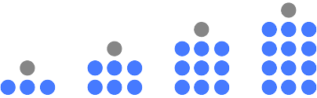

Deret Bilangan

Sumber : House of Math
- Pola barisan terdiri dari dua, yaitu aritmatika dan geometri. Baris aritmatika adalah barisan dari bilangan-bilangan yang memiliki selisih/beda yang tetap. Sedangkan, deret aritmatika adalah jumlah n suku pertama dari barisan aritmatika.
- Baris geometri adalah barisan di mana dua suku yang berurutan dalam barisan tersebut memiliki perbandingan yang sama. Perbandingan ini disebut sebagai rasio (r). Sama seperti aritmatika, deret geometri adalah penjumlahan n suku pertama dari barisan geometri tersebut.
Apa Itu Baris dan Deret Aritmatika?
Rumus Barisan dan Deret Aritmatika
Menentukan suku ke-n
Un = a + (n-1) * b
Keterangan :
Un : Suku ke-n
a : Suku pertama
n : Posisi suku (suku ke-5, berarti n-nya 5)
b : Beda/selisih
Menentukan jumlah n suku pertama
Sn = n⁄2* (a + Un)
Keterangan :
Sn : Jumlah n suku pertama
n : Posisi suku (suku ke-5, berarti n-nya 5)
a : Suku pertama
Un : Suku ke-n (jika ingin mencari 5 suku pertama, maka Un adalah U5)
Apa Itu Baris dan Deret Geometri?
Rumus Barisan dan Deret Geometri
Menentukan suku ke-n
Un = a * rn-1
Keterangan :
Un : Suku ke-n
a : Suku pertama
r : Rasio
n : Posisi suku (suku ke-5, berarti n-nya 5)
Menentukan jumlah n suku pertama
Sn = a * (1 - rn)⁄1-r untuk r < 1
atau
Sn = a * (rn - 1)⁄r-1 untuk r > 1
Tronic!